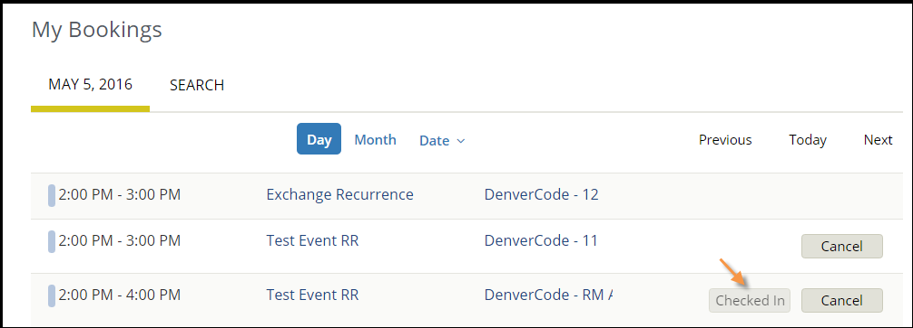

Note: The Booking Level Check-In Role must be enabled in EMS Web App by your Administrator by adding the Check In/Check Out Role to a Web Security Template.
Note: In Version 44.1, several functions that were available in previous releases are no longer available, including: Building level Check-in/Check-out, check in a group via the Locate Group web menu, and the Check In/Check Out web menu.